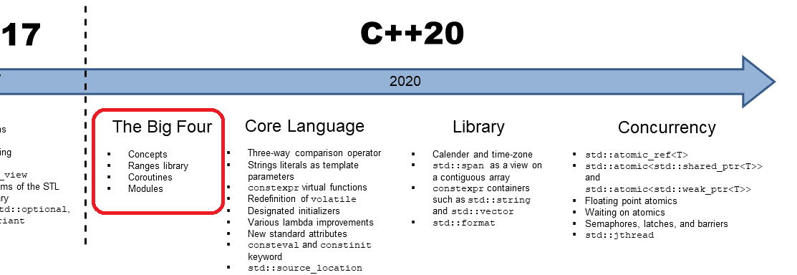

C++20: The Big Four
C++20 是自 C++17 之后的又一次 C++ 语言标准上的“重大改版”。而 “Big Four” 则是该标准中相较于 C++14 与 C++17 而言的，四个最为重要的新特性。它们分别对应着 Concepts、Ranges、Coroutines 以及 Modules。

Concepts
concept是 C++20 中的一个新的关键字；- 目前看来，其作用主要是用来约束模板在实例化时需要满足的“要求”。比如值类型、成员函数是否存在等。
- 减少模板实例化错误时的产生的错误信息长度，更利于代码的调试；
constexpr size_t DEFAULT_INDEX = 0;
template<typename Vec>
using Scalar = typename std::decay<decltype(Vec()[DEFAULT_INDEX])>::type;
template<typename Vec>
// limit the container value and the existence of the member function.
concept FloatVec =
std::floating_point<Scalar<Vec>> &&
requires(Vec vec) {
{ vec.size() } -> std::integral;
};
template<FloatVec Vec>
auto norm(const Vec& vec) -> Scalar<Vec> {
using Size = decltype(vec.size());
Scalar<Vec> result = 0;
for (Size i = 0; i < vec.size(); ++i) {
result += vec[i] * vec[i];
}
return std::sqrt(result);
}
struct Point {
float x;
float y;
auto size() const -> int { return 2; }
auto operator[](size_t i) const -> float {
return i == 0 ? x : y;
}
};
int main(int argc, char** argv) {
std::vector<double> vec = {1, 2, 3};
std::cout << "norm vec:" << norm(vec) << std::endl;
Point point {1, 2};
std::cout << "norm point:" << norm(point) << std::endl;
return 0;
}
Ranges
- Ranges 库提供了用于处理元素范围的组件，包括各种视图适配器；
int main(int argc, char** argv) {
std::vector<int> ints {0, 1, 2, 3, 4, 5};
auto even = [](int i) { return 0 == i % 2; };
auto square = [](int i) { return i * i; };
for (int i : ints | std::view::filter(even) | std::view::transform(square)) { // range adapter;
std::cout << i << ' ';
}
return 0;
}
Modules
- 以“编译单元”为模块，可以显式指定能够被导出（export）给其他模块使用的函数（编译单元内的函数可见性控制）；
- 想要被导出的方法需要放到命名空间中，模块的私有方法可以放到命名空间之外；
// A.cc
module;
import utility;
int foo() {}
int main (int argc, char** argv) {
std::cout << add(10, 20) << '\n';
return 0;
}
// B.cc
module;
export module utility;
int foo() {}
namespace utility {
export auto add (int x, int y) -> int {
return x + y;
}
auto minus (int x, int y) -> int {
return x - y;
}
}
Coroutines
- 生成器（Generator）是一种协程：子例程只在结束时一次性的返回全部结果值。协程可以在
yield时不调用其他协程，而是每次返回一部分的结果值；
（持续更新）